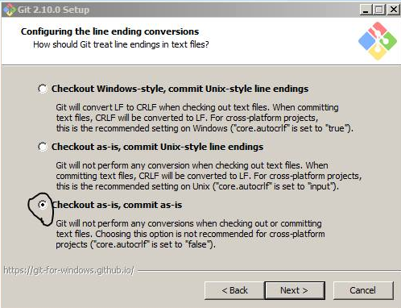

keyboard_arrow_left
keyboard_arrow_right
home
CS110
Introduction to Computer Science
Installing Git on Windows
https://git-scm.com/downloads
windows 10
windows 10
windows 7, windows 10
windows 7, windows 10
windows 7
windows 7, windows 10

windows 7, windows 10
windows 10
Rouben Meschian
rmeschian@gmail.com